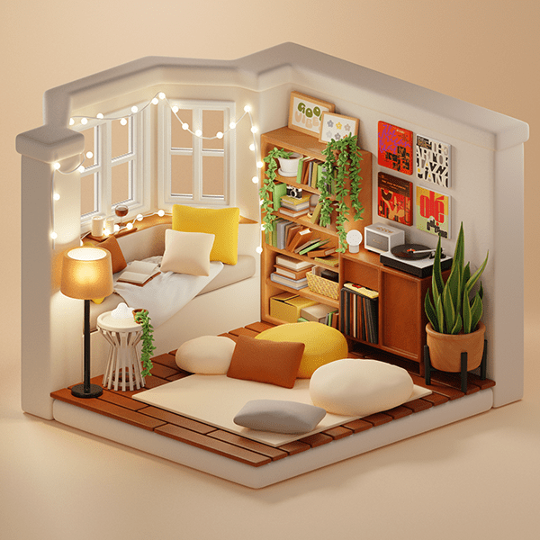
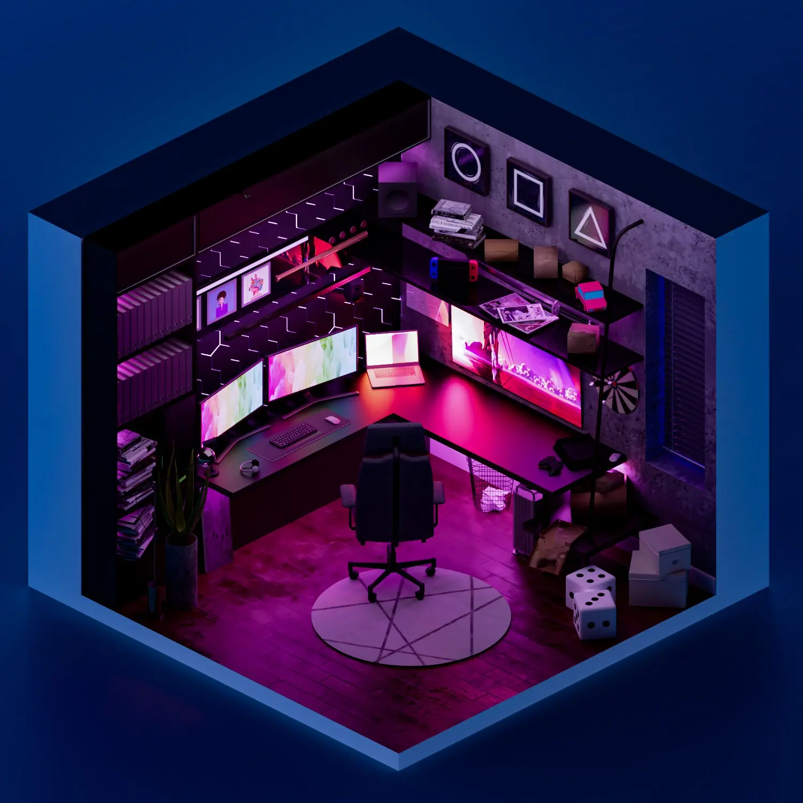
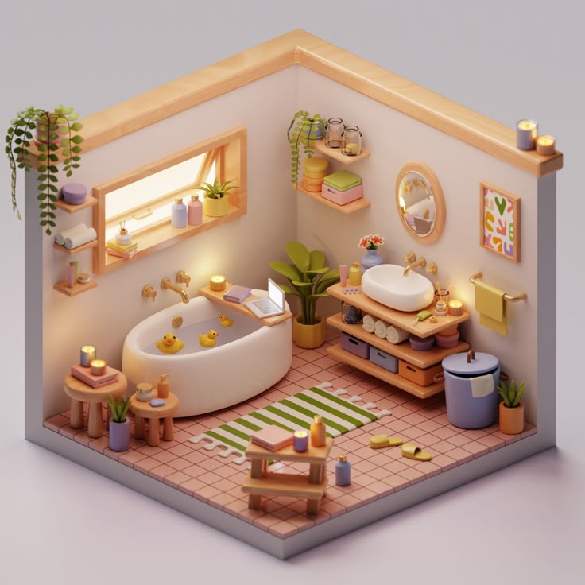
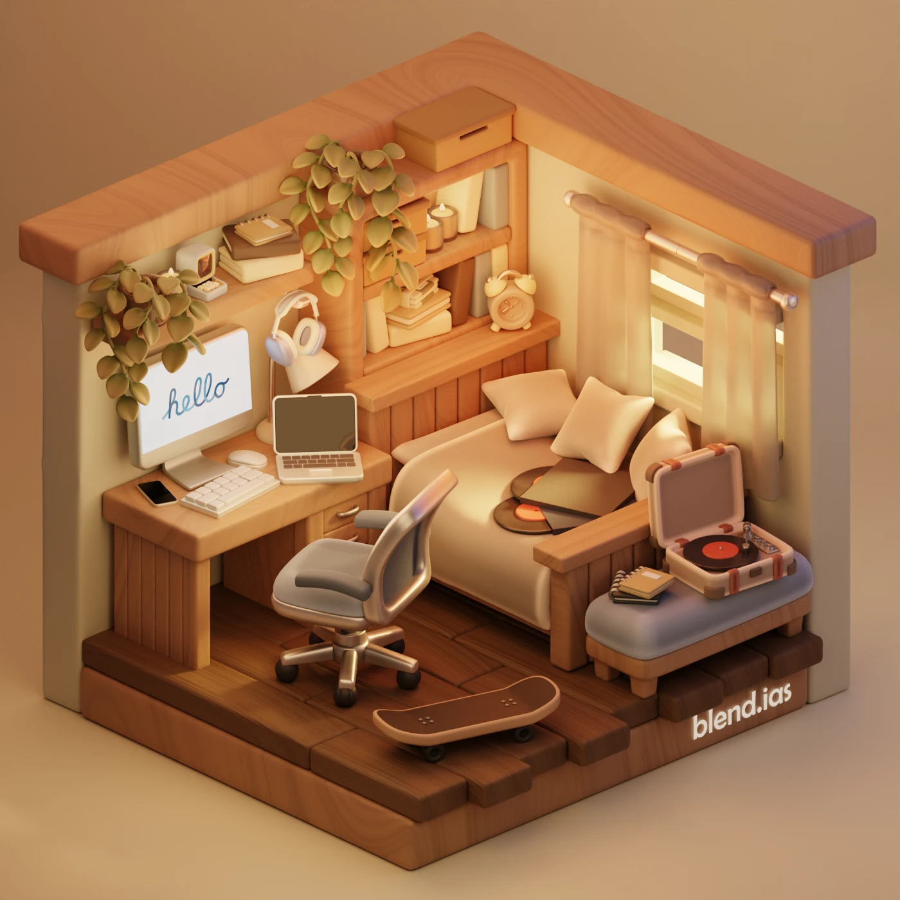
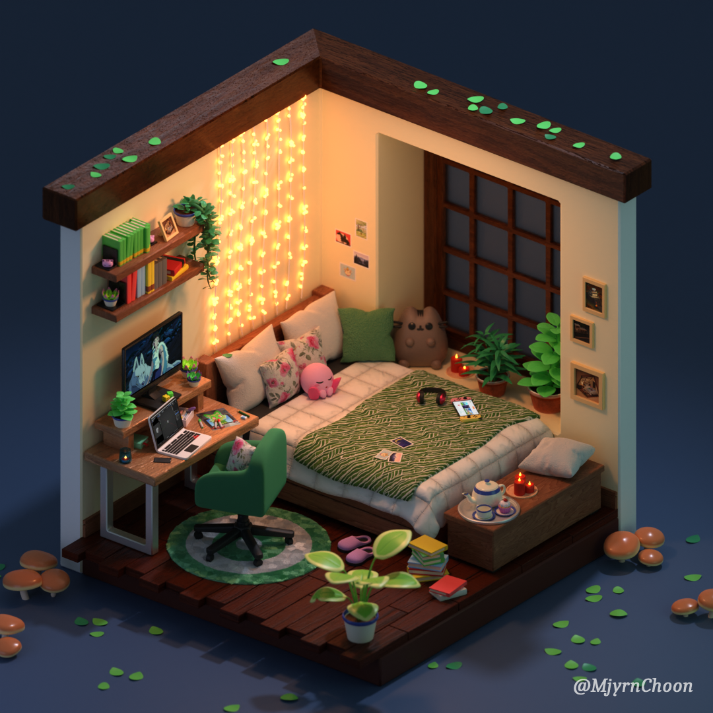
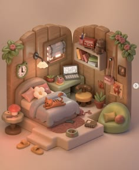
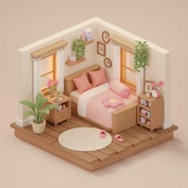
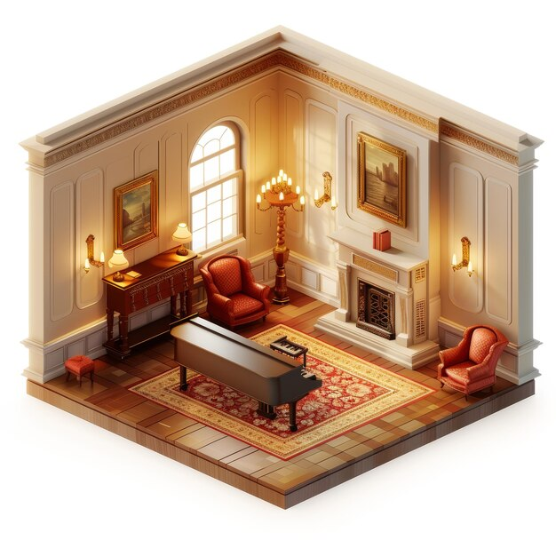
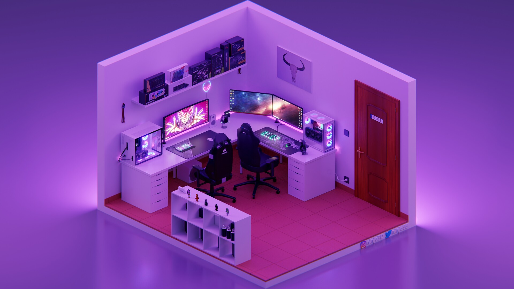

Gallery
A collection of isometric room examples for inspiration, gathered from around the web. New pieces will be added as tutorials are published.

Cozy reading nook
A warm bedroom corner with a bookshelf, plants and string lights.
Source: unknown
Neon gaming room
A low-poly gaming setup at night, lit with vibrant neon colors.
Source: unknown
Bakery shop interior
An isometric storefront scene, showing how the style works for non-residential spaces too.
Credit: Freepik
Pastel bathroom
A soft, pastel-toned bathroom with a bathtub, plants and warm lighting.
Source: unknown
Warm study & sleep corner
A wood-toned room combining a work desk and a cozy bed, with a record player as a focal point.
Credit: blend.ias
Cozy plant-filled bedroom
A small, plant-heavy bedroom made in Blender, with soft warm lighting throughout.
Credit: u/MjyrntChoon (Reddit)
Cottage-style bedroom
A rounded, cottage-inspired bedroom with cozy textures and accessories.
Source: unknown
Pink minimalist bedroom
A clean, minimalist bedroom in soft pink and wood tones.
Source: unknown
Living room with grand piano
A more elaborate, classically-styled living room — a good example of pushing the style further.
Credit: Freepik
Neon night gaming setup
Another take on the night-time gaming room, with strong pink and purple lighting.
Credit: Jose Alvarez (ninjo3d)